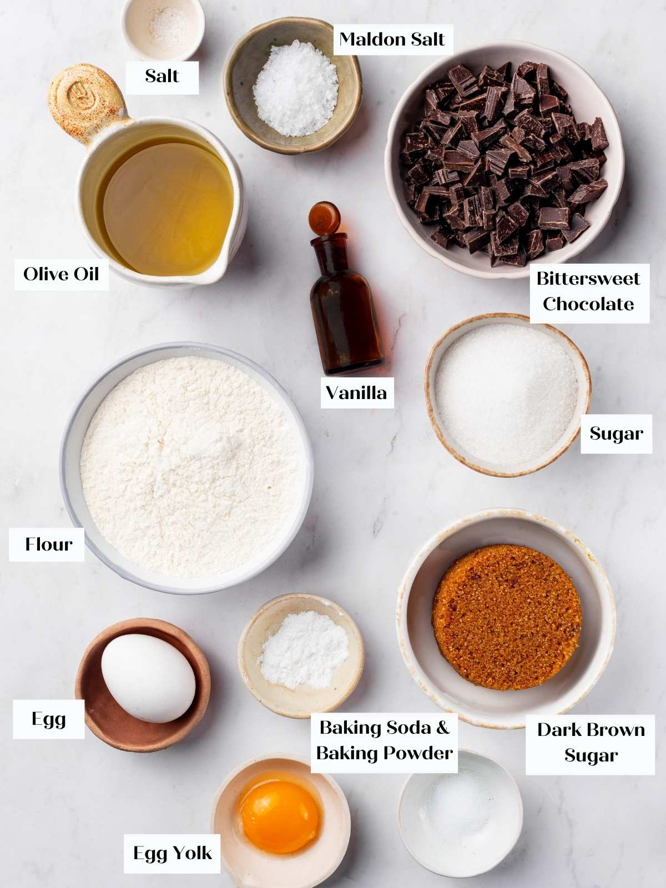
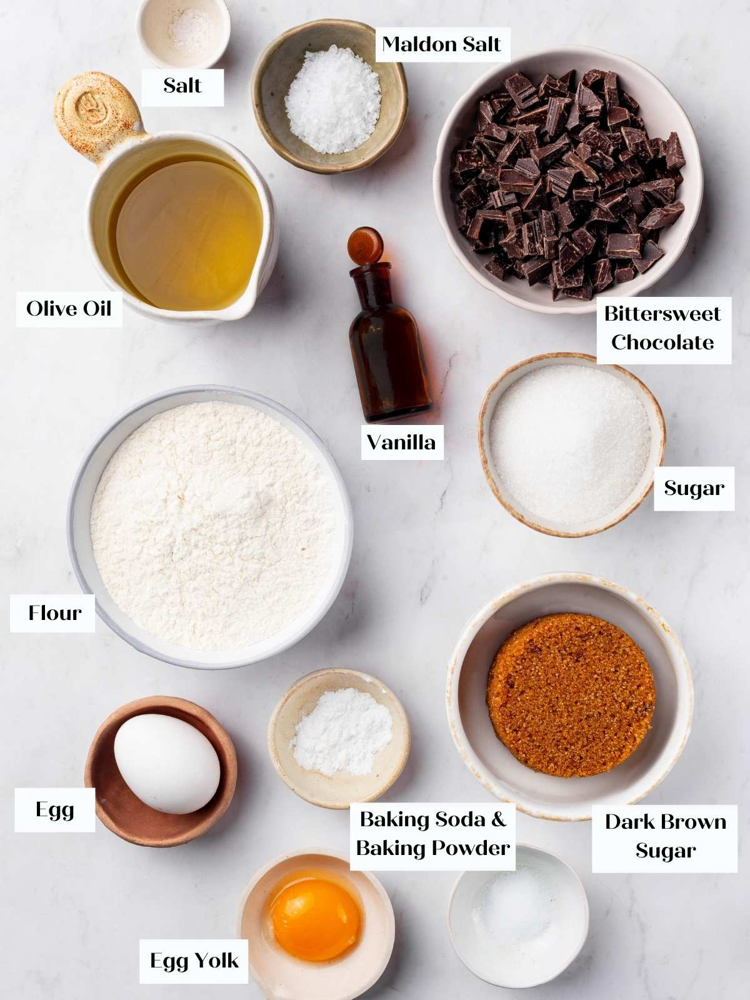

Classic Chocolate Chip Cookies
These delicious and chewy chocolate chip cookies are a timeless treat.
Perfect for family gatherings, festive occasions, or a quick snack, they’re easy to make and
absolutely irresistible.
Recipe Information
Preparation Time: 15 minutes
Cooking Time: 12 minutes
Servings: 24 cookies
Difficulty: Beginner
Ingredients
- 2 cups all-purpose flour
- 1 cup butter, softened
- 3/4 cup brown sugar
- 1/2 cup white sugar
- 2 large eggs
- 2 cups chocolate chips
- 1 tsp baking soda
- 1 tsp vanilla extract
- 1/2 tsp salt
Instructions
- Preheat oven to 375°F (190°C).
- In a small bowl, mix flour, baking soda, and salt. Set aside.
- Cream butter, brown sugar, and white sugar until smooth.
- Beat in eggs one at a time, then stir in vanilla.
- Gradually blend in the dry ingredients, then fold in chocolate chips.
- Drop spoonfuls of dough onto ungreased baking sheets.
- Bake for 10–12 minutes, or until golden brown.
- Let cookies cool on a wire rack before serving.
Tips
For extra chewy cookies, slightly underbake them and let them finish cooking on the hot tray after removing from the oven.
You can also add nuts for extra crunch.
Gallery
 

Nutrition Facts (per serving)
- Calories: 150 kcal
- Carbohydrates: 20g
- Fat: 7g
- Protein: 2g